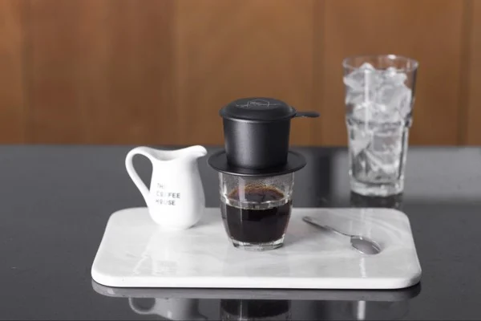

Pha phin là cách pha chế (chiết xuất) cà phê lâu đời và độc đáo của người Việt. Đáy phin được thiết kế có nhiều lỗ nhỏ li ti, chỉ vừa đủ cho dòng nước cà phê nhỏ giọt đi qua. Cà phê pha phin toát ra vẹn tròn tinh túy của cà phê, vị đậm nồng nàn, hương thơm say mê.
Pha phin
độc đáo việt nam

Step-by-Step
Step 1 - Chuẩn bị dụng cụ
Đun sôi nước đủ dùng để pha cà phê cũng như tráng qua phin và cốc đựng.

Step 2 - Cân và xay hạt cà phê
Hạt cà phê tại The Coffee House được phối trộn theo tỉ lệ riêng hạt Robusta và Arabica để phù hợp với khẩu vị của người Việt.
Step 3 - Chuẩn bị pha chế
Cho bột cà phê vào trong phin đã tráng qua nước nóng.
Nén bột cà phê trong phin với một lực vừa phải, không quá chặt, không quá lỏng.
Step 4 - Pha chế
Để cà phê bloom (nở) trong nước nóng trong khoảng 1 phút. Tiếp tục thêm nước nóng vào phin và đậy nắp.
Người ta có thể đánh giá độ “ngon” của một ly cà phê qua tốc độ nhễu dưới đáy phin: từng nhịp và chậm rãi.